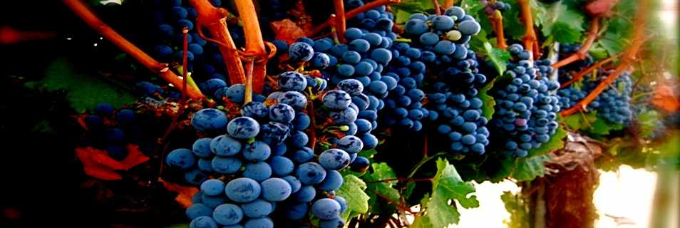
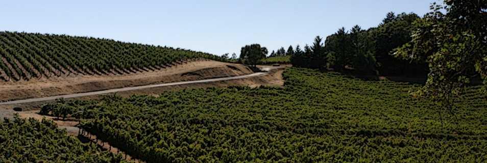
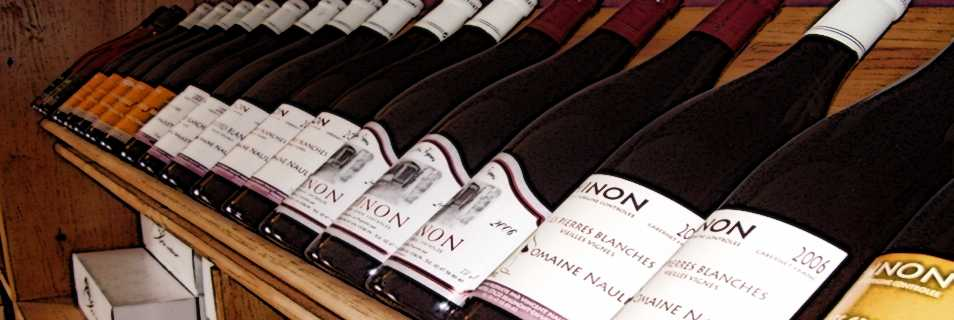
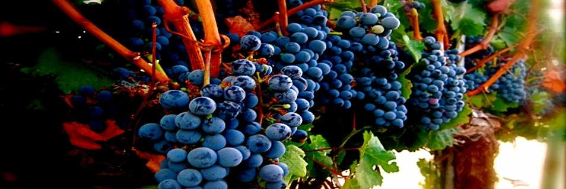
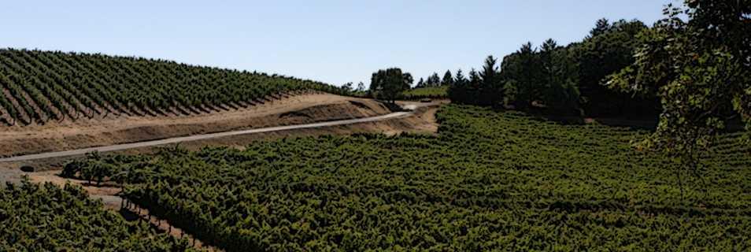
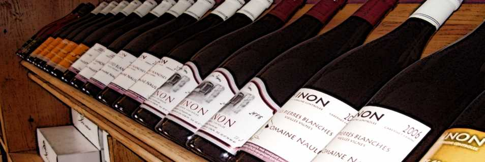

Nous pouvons vous accueillir tous les jours.
Afin de vous recevoir le mieux possible, contactez nous pour prévenir de votre arrivée.
eMail : contact@domaine-naulet.fr
Mobile : 06 63 29 02 01
Adresse : 22 rue des Rabottes, 37420 Beaumont en Véron
Chargement...